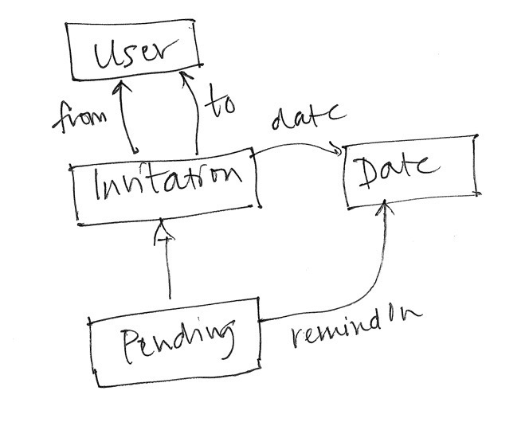

Motivation: Defining Behavior
The operational principle of a concept explains its archetypal behavior: how it’s typically used, and how it fulfills its purpose. But for a concept to be flexible and powerful, it should work in many different scenarios, so we need a way to pin down the behavior in detail.
Using the notion of a state machine, we can define how a concept will behave in every possible situation. Then we can analyze the design to make sure that the behavior is always acceptable. And as we transition from design to code, the state machine provides an ideal stepping stone. The state of the state machine will become the state of the program and the actions of the state machine will become the functions of its API.
A relational formulation of state is the best, in my view, because it is abstract enough to avoid making any premature implementation commitments, but at the same time is easily translated into code. For traditional or object-oriented data structures (in languages like JavaScript and Python) or collection databases (like Mongo.db), the translation is usually straightforward; for a relational database (where the state is defined by a schema in SQL) the translation is even easier.
The Role of State
Novices are sometimes confused about what the actual role of the state of a concept is. Part of the reason for the confusion is that state declarations are very similar to ontologies or knowledge graphs, and this encourages novices to think that the state should somehow embody everything that is known about the relevant objects in the domain and their relationships.
But that’s a mistake. The state of a concept plays a very straightforward role, and that’s to determine what the concept remembers at runtime. The state is the concept’s memory. If some piece of information is needed in an action, then it will have to be in the memory; if it will never be needed, it shouldn’t be there, even if it’s interesting.
For example, suppose we’re designing a concept called Group for messaging within a group of users. The state will certainly need to include which users belong to which groups, because there will be actions that depend on this (the action post for posting a message will likely check that the user is a member of the group they’re posting in). The state will also need to distinguish regular members of a group from the owner of the group, since some actions (such as approving new members) will only work for owners. Should the state also include the date at which a user joined a group? That would depend on the details of the behavior. If a user who joins a group can only see messages posted after they joined, the date will be necessary, since otherwise this check can’t be performed. But if a user can see all old messages, the date wouldn’t play a useful role, and can be omitted.
This criterion of only including in a concept’s state what the concept behavior requires helps divide state up between concepts too. Suppose we’re designing an app for a lending library. We might have a Catalog concept for finding books, and a Hold concept for putting a hold on a book. Since the Hold concept seems to be about books, you might be tempted to include in its state things like the name of a book, or the email address of a user issuing a hold. But this would be a mistake: the Hold concept should support just the actions of creating and tracking holds on books, and for those functions it doesn’t need to know anything about a book except for its identity. The Catalog concept will contain information about a book, including its title. Likewise, the Hold concept will only need to know the identity of a user, and the user’s contact details will be stored in another concept.
Defining State
We’ll define the state of a concept as a series of variable declarations. Each variable will correspond to a set, or to a relation. A relation may map one set to another (in which case it’s called a binary relation), or may associate elements of more than two sets (in which case I call it a multirelation). If you think of a relation as a table, then a binary relation has two columns, and a multirelation has three or more. A set is just a table with one column, so it’s a relation too.
This way of thinking about state is taken from the Alloy language, and we’ll use some basic Alloy-like syntax to define the relations.
For example, suppose we are designing a concept called Invitation that captures the kind of functionality that appears in many apps in which one user can issue an invitation to another user, to be a friend, to access some files, or whatever. The state of the concept might include
invited: User -> User
which introduces a relation called invited between users. You can think of a relation like this in several ways: as a mapping from users to users which can be access by a lookup (where u.invited might represent the set of users invited by the user u), as a tuple set or predicate that contains the tuple (u1, u2) when user u1 has invited user u2; or as a table with two columns, with the understanding that the first column represents the inviting user and the second the invited user, and each row represents an invitation. These are all equivalent ways to view a relation.
If we want to store the date on which invitation was issued, we could use a three-way relation:
invited: User -> User -> one Date
where (u1, u2, d) would be included when user u1 invited user u2 on date d. (The multiplicity keyword one says that each pair of users maps to a single date.)
Another way to model this would be to introduce a set of invitation objects, and then we can define the date of an invitation and who it’s from and to as additional projections:
from, to: Invitation -> one Person
date: Invitation -> one Date
As an example of a set declaration, we might have a set of pending invitations that have yet to be accepted:
Pending: set Invitation
Novices sometimes wonder why it’s preferable to use a set rather than a mapping to a boolean value. Why not, for example, represent the pending invitations as a relation like this?
isPending : Invitation -> one Bool
The answer is that it’s much easier to write relational expressions about the state using the set rather than the boolean function. For example, the set of users who have issued invitations that are pending can be written as Pending.from; to write this with the boolean function you’d need to construct a set comprehension with a formula.
Also, introducing sets lets you include certain invariants in the declaration of the state. For example, suppose the Invitation concept includes a remind action which reminds a user who has received an invitation to accept or reject it, and this action is triggered some fixed time after the invitation is issued. We could represent the time for the reminder like this:
remindOn: Pending -> one Date
which says that each pending invitation has a reminder date. Without the Pending set, we’d need to associate the reminder date with all invitations:
remindOn: Invitation -> lone Date
which says that each invitation is associated with zero or one dates at which the reminder should occur. Because the declaration maps all invitations, not just pending invitations, we have to weaken the multiplicity from one to lone (zero or one), and the invariant that says that every pending invitation has a reminder date is no longer expressed.
Diagram notation
The relation declarations of the state can also be represented in a diagrammatic form. Here, for example, is a diagram for the Invitation concept:

This kind of diagram is called an extended entity-relationship diagram. It’s “extended” because it lets you show that one set is a subset of another, in this case that the Pending invitations are a subset of all invitations.
Note how the diagram expresses the constraint that only pending invitations have reminder dates. This kind of constraint requires subsets and can’t be expressed in standard entity-relationship diagrams.
Principles
Here are some principles to help you design the state of a concept:
Sufficiency. The state must be rich enough to support the actions. Put another way, the concept must remember enough about actions in the past to be able to perform actions in the future correctly. Example: an Upvote concept, which tracks how many times users have approved some item, must remember which user issued each upvote in order to prevent double voting, but the date of the upvote would likely not be needed.
Necessity. Generally, the state should not include components that are not necessary to support the actions. Example: a Reservation concept need not store reservations that have been canceled; a Trash concept need not store the original location of an item if there is no restore action; a Voting concept need not store the time at which a vote occurred, if all votes received before some deadline are treated equally.
There is a subtle qualification to this principle. Sometimes it is useful to enrich the state in ways that anticipate future functionality. Example: in a Moderation concept, there might be no actions that require storage of posts that have been rejected by a moderator, but it might be sensible to store them anyway if you anticipate adding, for example, functionality that recommends acceptance or rejection based on treatment of prior posts from the same user.
Relation direction. The direction in which you declare a relation usually corresponds to the most common direction of lookup. Example: in the Folder concept, the relation between folders and the objects they contain would be declared as
contents: Folder lone -> set Object
and not
parent: Object -> lone Folder
since you expect to navigate from a folder to its objects, not vice versa. But like tables in a relational database (and unlike mappings in a programming language), the direction of a relation doesn’t fundamentally matter, and you can always do it either way, so you long as you’re consistent in how you refer to it. Example: if an Invitation concept included the relation
inv: Person -> Person
you would have to make sure that you interpreted it consistently, so that p.inv means either the persons invited by p or the persons who have invited p, but not both!
Unordered relationships. Mathematically, a relation is always directed, and corresponds to a set of ordered pairs or arrows between objects. To represent a symmetric, unordered relationship, you can define a symmetric relation that includes pairs in both directions. Example: the Friend concept may have a relation
friends: User -> User
that contains both (u1, u2) and (u2, u1) when users u1 and u2 are friends.
Most abstract structures. The state should not include structural decisions that needlessly complicate the state and limit the freedom of the implementer. In particular, don’t use a sequence (ordering some elements) when a set suffices. Example: you might think that the messages in a Group concept should be stored as a sequence, but since none of the actions involve sequence manipulations, and each message can appear only once, a set of messages is better. If you want the concept to contain enough information for messages to be displayed in order, you can associate a date with each message and assume the mapping of the concept to the user interface sorts messages by date.
Abstract types. Don’t use a primitive type that has properties that aren’t necessary for the concept behavior. Example: a Ticket concept may generate identifiers for tickets which, in the implementation, will happen to be integers that are generated in order. In the concept design, however, all that matters is that the ticket identifiers are distinct, so you should introduce an abstract type TicketId to represent them rather than using Int.
Richer abstract types. Another reason to introduce an abstract type is to record in the design that a type will have more properties than a primitive type. Example: rather than representing an email address as String, represent it as an abstract EmailAddress type, to capture the fact that email addresses have a particular form that can be validated.
Polymorphism. In an app that you’re designing, a concept will often be motivated by a need that is related to a particular kind of object, but the concept itself will not rely on any properties of that object. Example: a Hold concept in a library app that governs how borrowers place holds on books need only associated borrowers with books, and doesn’t need the borrowers or the books to have any particular properties.
Types of objects that are not specific to the concept (and are generated by it) should be represented by type parameters, making the concept polymorphic or generic. Example: the Hold concept might be declared as Hold<User, Item>, where User and Item are type variables (that is placeholders for concrete types that will be provided when the concept is used).
Carrier types. A concept will often introduce a type to represent a set of objects that is central to the concept. In this case, you can overload the name and use it for both the concept and the type, disambiguating them by context. Example: the Group concept has a set of groups of type Group; the Post concept has a set of posts of type Post; the Invitation concept has a set of invitations of type Invitation. When instantiating a polymorphic concept, you can refer to these types in a qualified name. Example: an Upvote concept is defined polymorphically over a generic type of Item (the items that are upvoted). The concept would be declared as Upvote<Item>, and can then be instantiated as Upvote<Post.Post> to indicate that, in this app, the target items are the posts of the Post concept.
Example: the Hold<User, Item> from the library app might be instantiated as Hold<User.User, LibraryCatalog.Book> with a User type from a User concept and a Book type from a LibraryCatalog concept.
No external types. Concepts should be fully independent of one another. This is what makes them understandable to users and reusable across applications and even domains. So a concept’s state should never refer to types that are introduced in another concept. Example: an Upvote concept in a social media app should not refer to the type of posts of a Post concept through a state component such as
concept Upvote
state
upvotes: Post -> set Vote
Instead, any type whose objects will (at runtime) come from another concept should be declared as a type parameter so that the concept is fully generic (see polymorphism above):
concept Upvote <Item>
state
upvotes: Item -> set Vote
This principle will actually force you to introduce polymorphism whenever objects are to be shared between concepts, because there’s no other way to say that a type in one concept matches a type in another (except for the primitive types such as String).
Primitive types. The standard primitive types are assumed to be defined globally, so a concept can refer to types such as String, Integer, Bool, etc., and use their standard operations (such as concatening strings, adding integers) in defining actions.
Sequences. When an ordered collection of elements is needed, a sequence can be used. Example: in a Chatbot concept, the transcript is a sequence of queries and responses:
Query, Response: set Entry
transcript: seq (Query + Response)
(The plus is a union operator, so Query + Response is the set that includes both queries and responses.)
Concepts aren’t classes. A common misunderstanding is to think of a concept as a class that has instances, with the concept’s state variables being the instance variables of the class. Example: you might write
concept User
state
friends: set User
imagining a collection of user objects each of which points to a set of friends. This is wrong, and assumes a much more complicated set up in which types occurring in state declarations can themselves be concepts. The correct view is that a concept is a state machine whose non-primitive types denote objects only in the sense that they have identity, not in the object-oriented sense of carrying methods and so on. The correct way to write this concept is
concept Friend <User>
state
friends: User -> User
which introduces a Friend concept that stores a friend graph.
Background
Implementation bias. Explain origin in VDM. Response to critique of algebraicists. Example of statistics bag from Carroll Morgan.